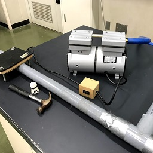
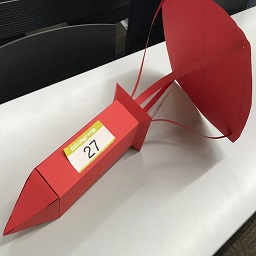

実験部門
部門概要
水の状態変化や熱力学といった物理らしいテーマを扱った実験をしています。
何か仮説を立てて検証する、というような実験ではありませんが、実験器具の使い方を知り、物理現象を実際に確認するために行っています。
文化祭では来場者にも楽しんでもらい、ちょっとした物理の現象に親しんでもらうことを目標にしています。

演示実験
ほとんどの期間は、演示実験の考案・指導を行い、文化祭で披露します。
安全と面白さを第一にしています。
爆縮
水を少量入れた缶を熱し、水蒸気で満たした状態にします。
空気の流入を断ったうえで、これを冷やすと、水蒸気が水に戻り、急激に気圧が下がります。
すると、内外の圧力差により缶がつぶれます。
このように、水の状態変化を利用した実験で、派手につぶれるので面白いですが、初めてやるときはかなり怖い実験です。

断熱圧縮
筒状の装置を密閉し、急激に圧縮すると、温度が上がります。
圧縮前に綿を少量入れておくと、発火し、一瞬炎が見られます。
熱はすぐに逃げてしまうため、勢い良く圧縮しなければなりません。

ティーバッグ燃焼
空のティーバッグに火をつけて上昇気流を起こし、ティーバッグの内側に吹き込むようにします。
うまくいけば2mほど上昇しますが、気流がティーバッグ内に誘導されないと上昇しないことがあり、簡単そうな見た目の割には注意点の多い実験です。

アルコール爆発
上部を切り取って開けた空き缶にアルコールを吹き入れ、上に紙コップを被せます。
アルコールが気化して缶内の空気と混ざり合ってから着火すると、一気に引火して紙コップが飛び上がります。
アルコールが多すぎると蒸発しきらず、少なすぎても爆発が小さくなってしまうため、加減が難しい実験です。

真空砲
筒に、バドミントンのシャトルなどの弾となるものを入れ、両端を閉じて空気を抜きます。
充分に気圧が下がったところで片方の蓋を外すと、音速に近いほどの速さで勢いよく空気が流入します。
この空気に押され、弾は反対の端から飛び出します。
出口に缶などを置いておけば、当たった衝撃でへこみます。
派手な音と威力を出すので、物理部の実験の看板として受け継がれてきました。

エッグドロップ
部内での大会を毎学期1～2度開催しています。
また、例年秋に開催されるエッグドロップ甲子園にも参加しています。
